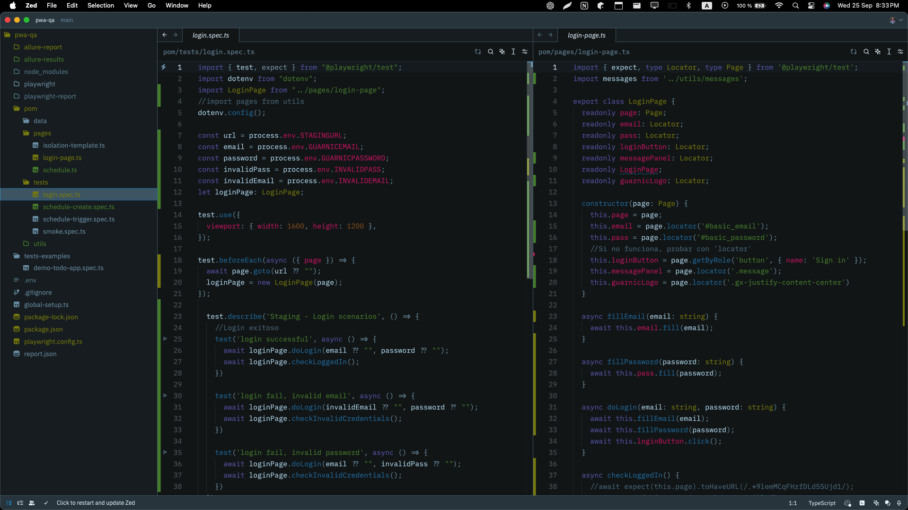

![Profile picture of [Tu nombre]](/src/assets/profile 3.jpeg)
Web Automation Testing Project with
Playwright
Developed for Guarnic
En el proyecto de automation testing para la PWA de la empresa Guarnic se implementó Playwright como framework principal, utilizando TypeScript como lenguaje de desarrollo, lo que aportó tipado estático, facilitando la detección temprana de errores y mejorando la mantenibilidad del código. El código se estructuró siguiendo el patrón de diseño Page Object Model (POM), lo que permitió una separación clara de las funcionalidades de las páginas web, mejorando la reutilización y la legibilidad.
Tecnologias implementadas
Playwright
Avanzado
Allure Report
Intermedio
Node.js
Avanzado
Git
Avanzado
GitHub
Avanzado
TypeScript
Intermedio
Para el manejo de reportes, se integró la librería allure-report, que proporciona reportes detallados sobre la ejecución de las pruebas, incluyendo capturas de pantalla, métricas y los pasos realizados, lo que facilita el análisis y la identificación de fallas en el sistema. Además, se utilizó Git para el control de versiones, y GitHub como plataforma de colaboración, lo que permitió un flujo de trabajo eficiente y un manejo robusto del historial de cambios. El proyecto se ejecutó en un entorno basado en Node.js, aprovechando su ecosistema y la capacidad de ejecutar pruebas de manera rápida y eficiente en múltiples entornos.